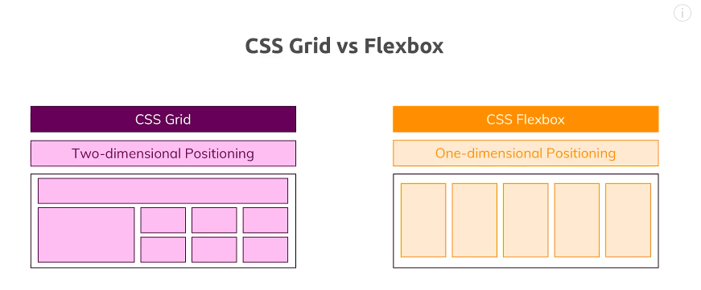

Propósito:
Nuestro propósito es dar a conocer Conceptos básicos de de flexbox y Grid Layout en CSS, esto con el fin de afianzar sus conocimientos en el uso de estas tecnologias.
Flexbox y Grid
Son dos mecanismos de CSS que resultan especialmente útiles de cara a la maquetación de páginas web. Comparamos sus principales funcionalidades y, en un primer vistazo, tenemos que reconocer que Grid puede hacer cosas que Flexbox no puede
hacer y Flexbox puede hacer cosas que Grid no puede hacer. Con la ventaja de que ambos pueden trabajar juntos: un elemento de Grid puede ser un contenedor Flexbox y un elemento de Flexbox puede ser un contenedor de Grid.
Zúñiga, F. (10/11/2017). Grid o Flexbox. Arsys:Blog.
https://www.arsys.es/blog/programacion/grid-flexbox-mejor-diseno-maquetacion-web/

¿Que es Flexbox?
Es un módulo de diseño de CSS3 que se creó para mejorar la forma en la que se hace diseño responsive, evitando así el uso de float, escribiendo menos código y facilitando el posicionamiento de elementos, incluso no teniendo noción
del tamaño de éstos. Básicamente la idea de Flexbox es poder alterar el ancho, alto y posicionamiento de elementos de la mejor manera con el espacio del que disponemos.
Cabrera, G. (Miércoles, 05 Febrero 2020). Flexbox - ¿Qué es y para qué sirve?. SOMOSPNT.
https://somospnt.com/blog/148-flexbox-que-es-y-para-que-sirve
¿Que es Grid?
Grid es un modelo de maquetado basado en un sistema de rejillas incorporado en CSS3 para gestionar de manera sencilla y customizable la disposición de nuestros elementos en nuestra página web.
Cabrera, G. (Jueves, 27 Febrero 2020). Introducción a CSS Grid. SOMOSPNT.
https://somospnt.com/blog/150-introduccion-a-css-grid